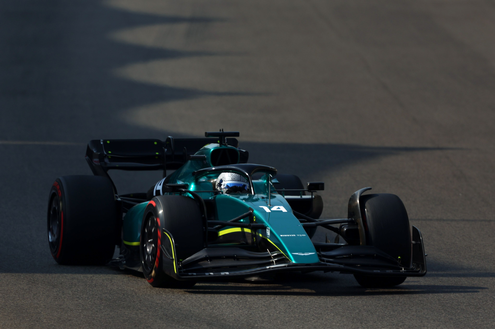

Alonso se sube al Aston Martin
| El asturiano inicia este Martes su nueva etapa con el teste de neumaticos en Abu Dhabi. Salio a las 9:00h |
Fernando Alonso no espera. Hoy se hará el asiento para el Aston Martin
y mañana realizará su primer test con los ‘verdes’… aunque irá de negro.
La razón, tiene el permiso de Alpine para probar, pero unos contratos de imagen que no puede romper.
Esta es una práctica habitual en MotoGP, cuando en Cheste hacen el test postemporada y
toman contacto con su futuro equipo. Incluso el carenado de las motos es negro y el mono
puede ser negro o de color, pero sin publicidad, salvo en todo caso un patrocinador personal del piloto.
